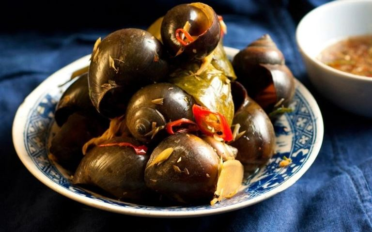

Từ ốc bươu chúng ta có thể chế biến được đa dạng các món ngon khác nhau. Dưới đây, Haisan.online sẽ giới thiệu đến bạn 5 cách chế biến ốc bươu xào thơm ngon, đơn giản và tiết kiệm nhất.
Tổng hợp chi tiết 5 cách chế biến ốc bươu xào đơn giản, tiết kiệm mà lại vô cùng thơm ngon. (Nguồn: Pinterest.com)
Cách sơ chế ốc bươu đúng chuẩn
Ốc là loại hải sản sinh sống vùi sâu dưới các lớp bùn đất. Bởi thế, việc trên cơ thể dính nhiều cát cặn, chất bẩn. Dưới đây, Haisan.online sẽ giới thiệu đến bạn một vài cách sơ chế ốc bươu đúng chuẩn để làm sạch để ốc bươu sạch hoàn toàn nhé!.
Cách 1: Ngâm ốc bươu với kim loại
Kim loại là một trong những chất làm sạch hiệu quả các chất bẩn từ sâu bên trong tất cả các loại ốc. Bởi thế, người ta thường ngâm ốc bươu trong các thau đồng, nhôm, sắt từ 2 đến 3 giờ để ốc nhanh chóng nhả hết tất cả bùn đất từ trong ra ngoài. Ngoài ra, nếu nhà không có thau kim loại, bạn có thể thả các vật dụng kim loại như dao, kéo, thìa, dĩa,… để ngâm cùng.
Cách 2: Ngâm ốc với nước vo gạo
Ngâm ốc bươu với nước vo gạo là một mẹo ngâm ốc hiệu quả được nhiều người áp dụng. Cách này cũng được đánh giá cao bởi tính tiết kiệm và có thể làm sạch ốc trong thời gian ngắn. Với cách này, bạn chỉ cần phần nước gạo và cho ốc vào ngâm trong khoảng từ 1 – 2 tiếng đồng hồ. Sau đó, đem ốc đi rửa sạch rồi chế biến như bình thường.
Cách 3: Ngâm ốc với ớt tươi, chanh và giấm
Cách thứ ba là bạn có thể ngâm ốc cùng với hỗn hợp chanh và ớt. Cách thực hiện rất đơn giản, bạn chỉ cần cho ốc vào thau nước rồi vắt chanh và cắt ớt bỏ vào. Khuấy đều để mọi con ốc đều có thể nhả hết đất bẩn. Ngâm như vậy từ 2 đến 3 tiếng là hoàn thành.
Cách làm ốc bươu xào thơm ngon, đặc sắc nhất
Ốc bươu xào sả ớt
Ốc bươu xào xả ớt là món ăn dân giã, quen thuộc với mọi người từ xưa đến nay. Công thức chế biến ốc bươu xào sả ớt cực kỳ đơn giản. Khi ăn các bạn sẽ cảm nhận được hương vị thơm ngon, cay nồng từ ốc bươu khi kết hợp cùng sả và ớt vô cùng độc đáo.
Nguyên liệu cần có:
Quy trình chế biến
Bước 1: Sơ chế nguyên liệu
Ốc bươu sau khi mua về, thực hiện sơ chế theo đúng cách để ốc loại bỏ hết bùn đất. Trong khi ngâm, bạn nhớ thường xuyên vò nhẹ ốc và thay nước ngâm mới để quá trình làm sạch được hiệu quả nhất.
Để tiết kiệm thời gian, trong khi chờ ốc sạch, bạn có thể đem các nguyên liệu khác đi sơ chế. Bóc nhẹ lớp bẹ già của sả, đem phần non đi rửa sạch. Chặt chả thành 2 rồi đập giập phần thân dưới, phần thân trên thì băm nhỏ và xắt lát chéo. Gừng, nghệ rửa sạch, đập giập rồi băm nhỏ. Hành, tỏi lột vỏ, băm nhuyễn. Ớt và lá chanh rửa sạch rồi thái nhỏ.
Bước 2: Luộc ốc
Để dễ dàng tách ốc ra khỏi vỏ, chúng ta sẽ tiến hành luộc ốc bươu. Cho ốc vào nồi và đổ nước cao khoảng 1/2 lượng ốc. Tiếp đến, thả vào nồi vài bẹ sả và gừng thái lát vào để ốc luộc được sạch và thơm hơn. Luộc ốc với mức lửa lớn đến khi ốc sôi thì cho vào một ít muối cho đậm đà. Dùng đũa đảo đều. Luộc ốc khoảng 5 – 6 phút thì tắt bếp.
Sau khi luộc, bạn vớt ốc ra để nguội. Sau đó, dùng vật nhọn để khêu thịt ốc ra. Lưu ý chỉ nên lấy phần đầu ốc, bỏ đi phần ruột và túi ốc con. Khi đã lấy được hoàn toàn thịt ốc, bạn đem bóp cùng với một ít muối hạt và nước cốt chanh để làm sạch ốc một lần nữa. Cuối cùng rửa lại với nước rồi để ráo.
Bước 3: Xào ốc với sả ớt
Sau khi đã chuẩn bị tất cả nguyên liệu cần thiết, chúng ta sẽ bắt đầu xào ốc với tỏi ớt. Đầu tiên, cho dầu ăn vào chảo đun nóng. Phi thơm hành tỏi đã băm nhuyễn cho dậy mùi. Thêm tiếp sả, gừng và nghệ vào và đảo đều tay.
Tiếp đến, cho phần ốc bươu đã sơ chế vào xào cùng. Sau đó, nêm nếm gia bị như hạt nêm, bột ngọt, dầu hào, đường cho vừa miệng. Xào thêm khoảng 30s cho ốc ngấm gia vị rồi cho ớt vào. Đảo tiếp 5s thì tắt bếp. Vậy là món ốc bươu xào sả ớt đã được hoàn thành.